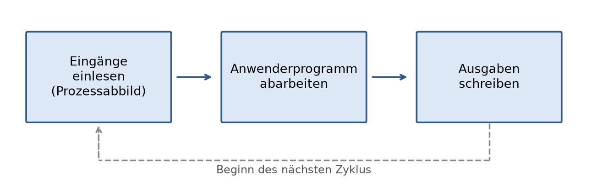

Code
import matplotlib.pyplot as plt
from matplotlib.patches import FancyBboxPatch
fig, ax = plt.subplots(figsize=(8.5, 2.6))
texte = ['Eingänge\neinlesen\n(Prozessabbild)',
'Anwenderprogramm\nabarbeiten',
'Ausgaben\nschreiben']
w, h = 2.3, 1.05
xs = [0.3, 3.45, 6.6]
y = 0.75
for x, t in zip(xs, texte):
ax.add_patch(FancyBboxPatch((x, y), w, h, boxstyle='round,pad=0.02',
facecolor='#dce8f5', edgecolor='#365a80', lw=1.4))
ax.text(x + w/2, y + h/2, t, ha='center', va='center', fontsize=10)
for x in xs[:-1]:
ax.annotate('', xy=(x + w + 0.72, y + h/2), xytext=(x + w + 0.08, y + h/2),
arrowprops=dict(arrowstyle='->', lw=1.5, color='#365a80'))
# Rücksprung vom letzten zum ersten Schritt
c3, c1 = xs[2] + w/2, xs[0] + w/2
y_unten = 0.28
ax.plot([c3, c3], [y - 0.03, y_unten], color='#888888', lw=1.3, ls='--')
ax.plot([c3, c1], [y_unten, y_unten], color='#888888', lw=1.3, ls='--')
ax.annotate('', xy=(c1, y - 0.03), xytext=(c1, y_unten),
arrowprops=dict(arrowstyle='->', lw=1.3, linestyle='--',
color='#888888'))
ax.text((c1 + c3) / 2, y_unten - 0.16,
'Beginn des nächsten Zyklus',
ha='center', fontsize=9, color='#555555')
ax.set_xlim(0, 9.35)
ax.set_ylim(0.0, 2.1)
ax.axis('off')
plt.show()